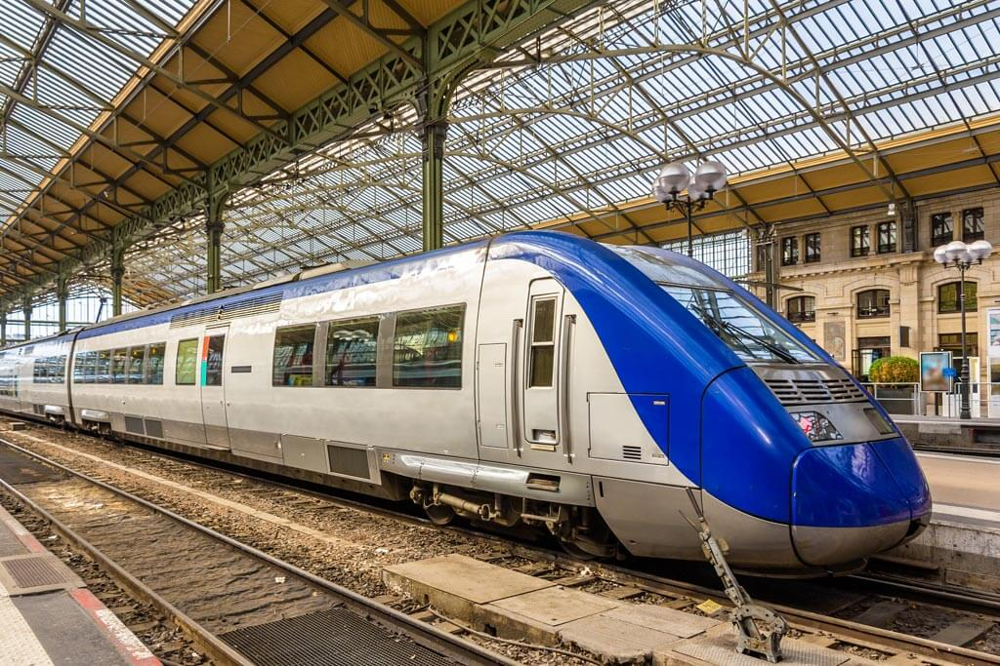
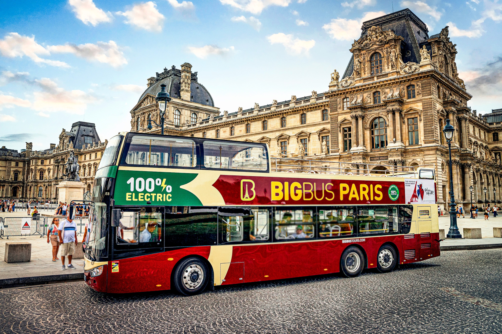
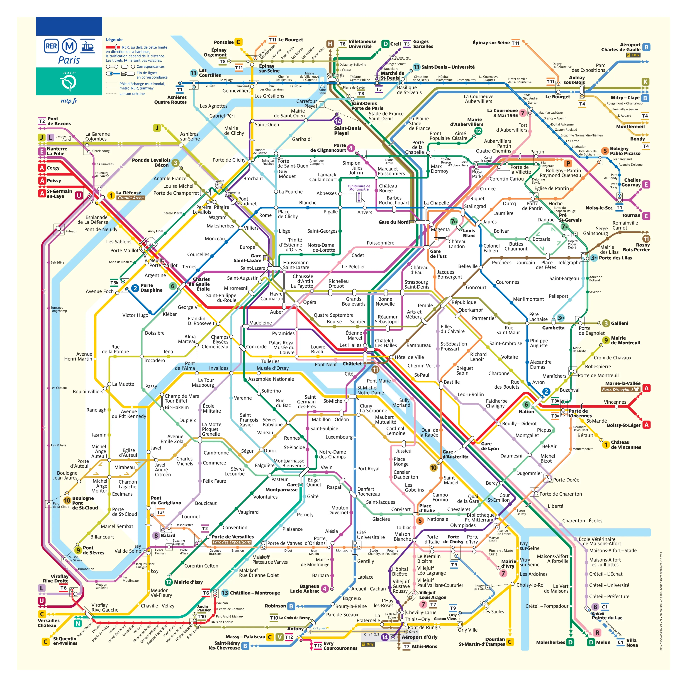

So you’re planning a trip to France, one of the most
important things you need to know is how to get from your
coffee in Paris to a croissant tasting in Leon without
any hassle. Lucky for you France happens to be a country
with vast public transport infrastructure for you to take
advantage of on your travel.
The types of tranport you
can be sure to find include buses, trains and metro


There are many different circumstances when traveling
that are better suited for one mode of
transport over another. This graph can be
useful in representing where you can use each
one and for what price:
Transport Type
Use
Pricing
Bus
Travel through Cities
€2.05
Train
Travel from city to city
€10-€20
Metro
Fast method of city travel
€2.55
Taxi
Going to specific destinations not on routes
€1-3 /km
|Trains
French trains are well known for high
speed cross country travel, especially
networks such as the TGV which can
reach speeds of 320km/h so no matter
your destinations rest assured the
French train network can handle it.
Frances largest rail network called
the SNCF provides travel for 10,000,000
passengers during 15,000 departures
across 3,000 stations across the
nation.
|Tickets
There are many methods of purchasing
train tickets on your travels such as,
online methods and offline methods.
France’s bus network includes local city buses,
regional services, and intercity routes. Outside
major cities in many towns, buses connect
train stations and bus terminals with city
centres. Tour buses are also common in large
cities such as Paris and offer sightseeing
opportunities for some of the countries
greatest attraction
|Paris Bus Stops
|Metro
French metro is usually limited
to city travel so I will discuss
metro travel in the context of Paris
alone. The Paris metro has 16
numbered lines, with trains usually
identified by the name of their final
station. Use the official RATP map
to plan routes and check the latest
ticket and pass rules before travelling
as fares and ticket options can
change fairly often
|Map of Metro Lines

|Tickets
Paris Metro tickets can be bought at
ticket machines and counters in Metro
and RER stations, or through the Bonjour
RATP and Île-de-France Mobilités apps.
You can load tickets onto a Navigo Easy
card or your smartphone and validate
it at the station gates.
France is a beautiful country and
deserves to be explored fully not
just the cities so i have linked
below some trips and routes I would
suggest taking into consideration
when choosing how to spend your time
in France